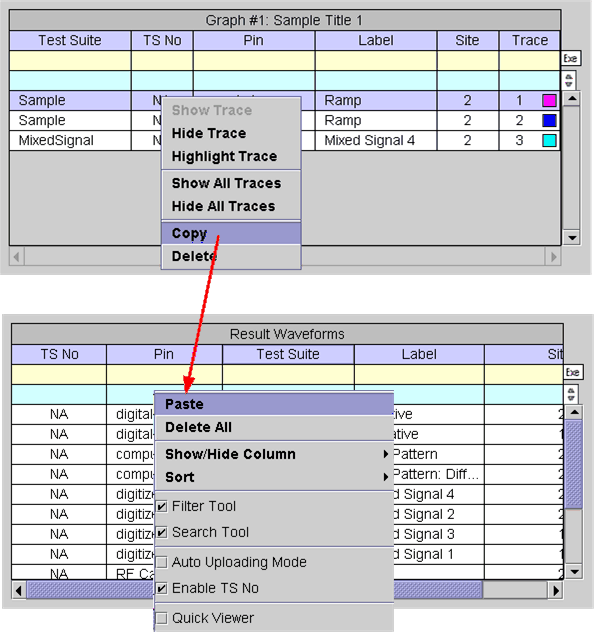

Copy/Paste Waveforms
When a waveform is selected, right-click and choose Copy from the shortcut menu to copy the waveform to internal memory. The Paste function will then be activated in the Result Waveforms table in the Waveform Navigator Tool (WNT) as shown below.

When attempting to paste a waveform into the Result Waveforms table, a warning dialog box appears. You can proceed or cancel the operation.